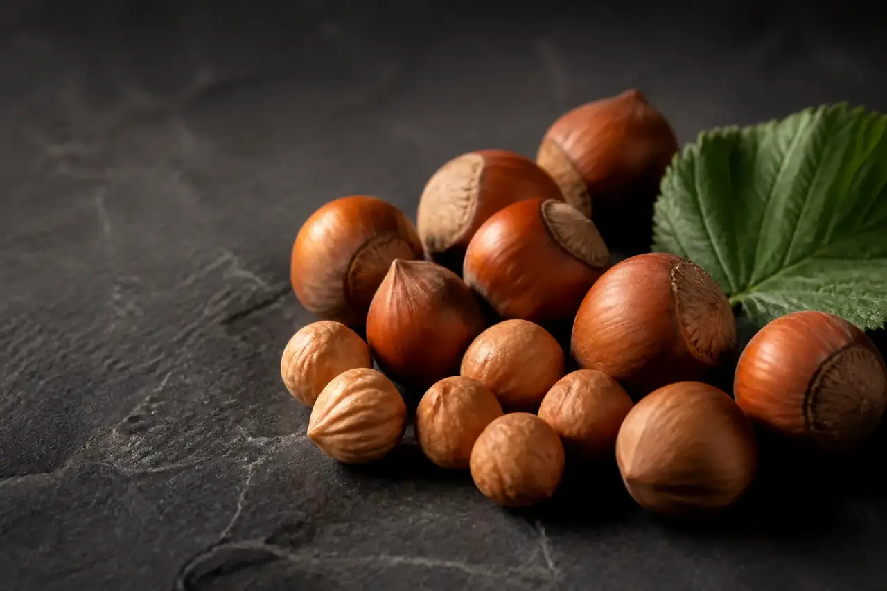

Ficha de especie · Corylus avellana
Avellanas
Una cadena de largo plazo en expansión, vinculada con demanda industrial y decisiones de huerto.
Panorama
Una lectura técnica y trazable.
Una cadena de largo plazo en expansión, vinculada con demanda industrial y decisiones de huerto.
El panorama cuantitativo se incorporará cuando el cliente entregue y valide superficie, producción, calibres, destinos y temporadas.
Criterios mínimos
- Fuente identificada
- Periodo explícito
- Unidad comparable
- Fecha de corte visible
Referencias de mercado
Estructura disponible; cifras en validación.
No publicamos valores ficticios. Esta tabla documenta el esquema que recibirá los datos reales.
| Especie | Referencia | Periodo | Fuente | Corte |
|---|---|---|---|---|
| Avellanas | Dato sujeto a validación | — | — | — |
Conversemos
Participar como exportador Fortalezcamos la referencia de avellanas.
La publicación agregada requiere anonimización, confidencialidad y revisión previa.